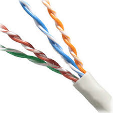
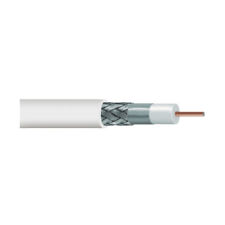
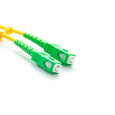

Enlaces de la empresa
Productos
Dispositivos
Disponemos de los siguientes dispositivos para la creación de tu red
- Router
- Repetidor
- Amplificador
- Adaptador de red
- Conmutador
Cables
Es posible utilizar los siguentes cables en la instalación
- Cable par trenzado UTP
- Cable par trenzado STP
- Cable par trenzado FTP
- Cable coaxial fino
- Cable coaxial grueso
- Cable de fibra óptica monomodo
- Cable de fibra óptica multimodo
Fotos

Cable coaxial
Cable de fibra óptica